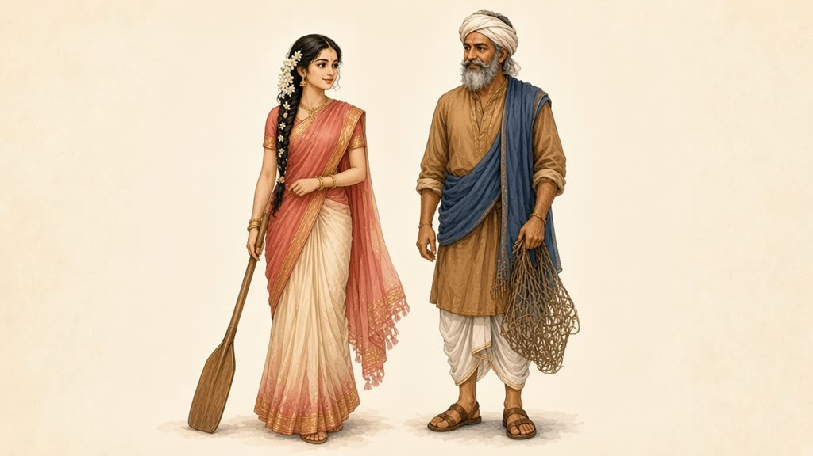
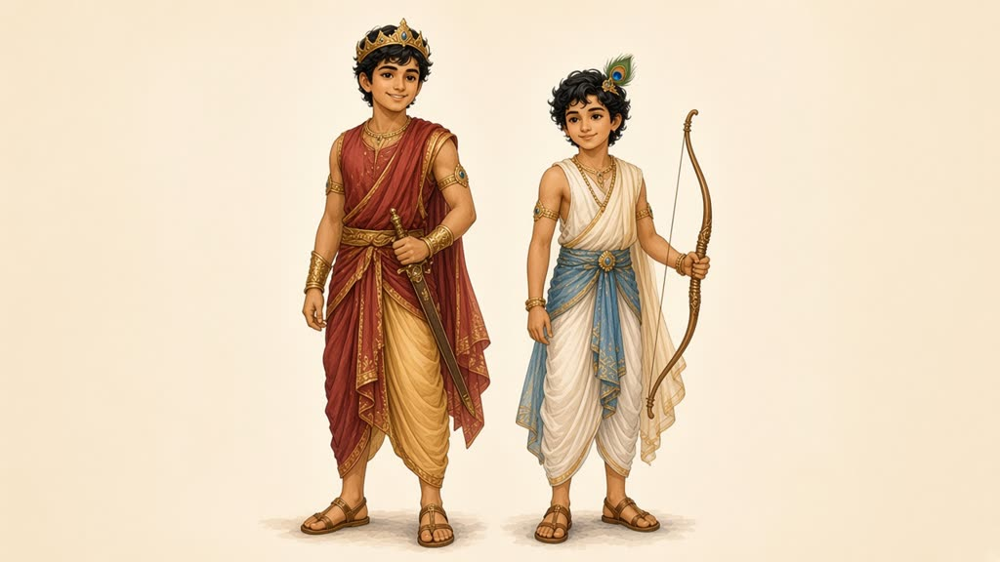
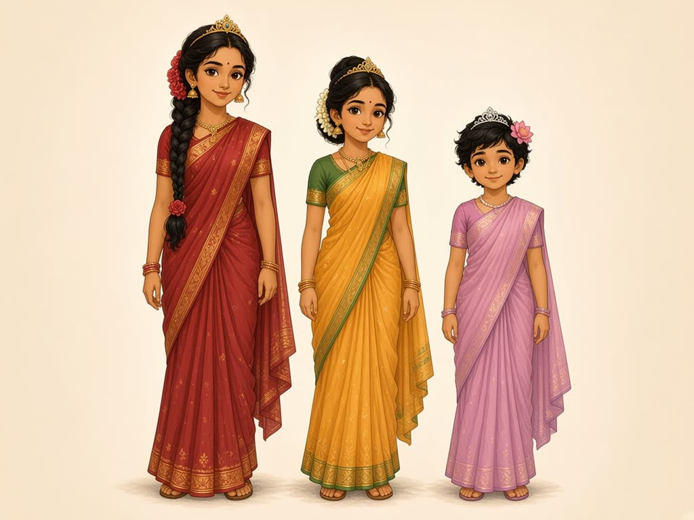
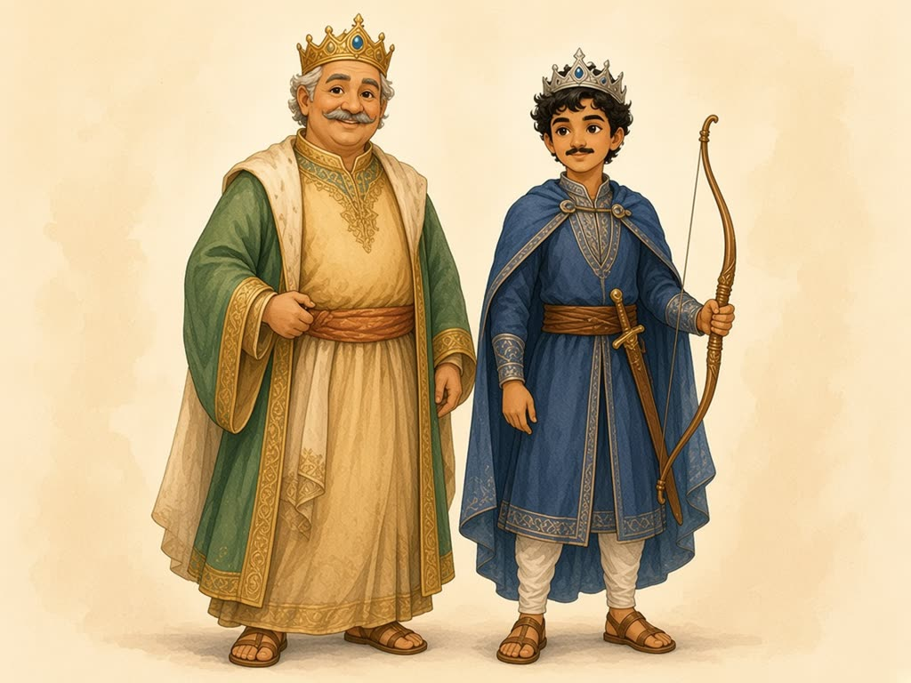
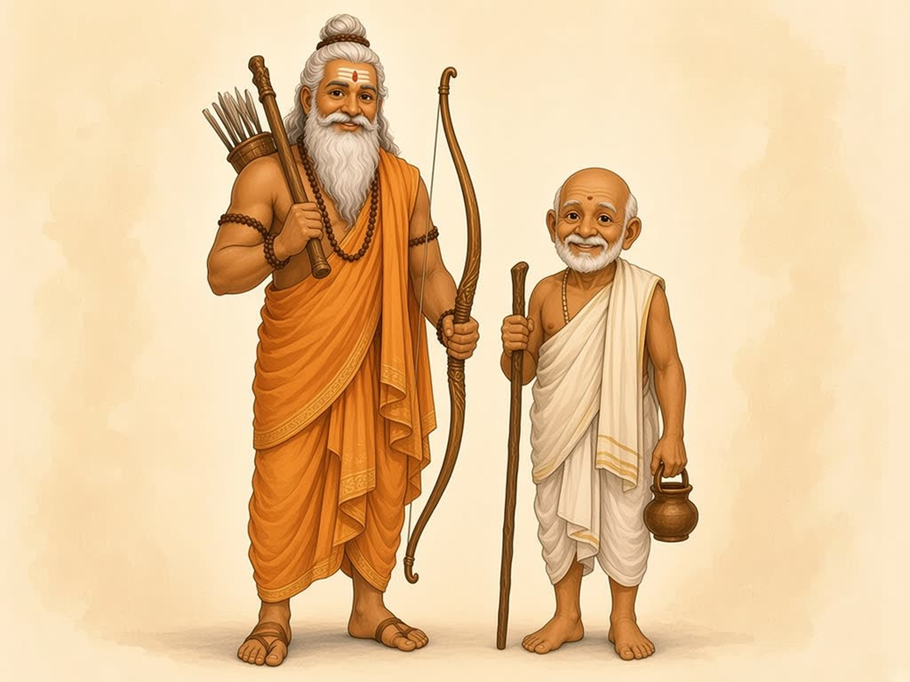

Meet the characters
The royal family

King Shantanu: the kind king of Hastinapura. (Episodes 1, 2, 3)
Ganga: the goddess of the river. (Episodes 1, 5)
Devavrata: their brave son. After his great promise he is called Bhishma. (Episodes 1, 2, 3, 4, 5)
By the river

Satyavati: a kind fisherman's daughter who rows a flower-scented boat; she marries King Shantanu and becomes queen. (Episodes 2, 3, 4)
Fisherman Chief Dashraj: Satyavati's father. (Episode 2)
The two princes

Chitrangada: the older son of King Shantanu and Satyavati, bold and brave; he becomes king. (Episode 3)
Vichitravirya: the gentle younger son, who becomes king as a boy while big brother Bhishma protects the kingdom. He grows up and marries Princess Ambika and Princess Ambalika. (Episodes 3, 4)
The princesses of Kashi

Amba: the eldest princess of Kashi, thoughtful and brave; she never gives up. (Episodes 4, 5)
Ambika: the cheerful middle princess; she marries King Vichitravirya. (Episode 4)
Ambalika: the shy youngest princess; she also marries King Vichitravirya. (Episode 4)
Two kings

King of Kashi: the father of the three princesses. (Episode 4)
King Shalva: a proud king who fights Bhishma; Bhishma lets him go safely. Later he refuses to marry Amba. (Episodes 4, 5)
Two wise sages

Parashurama: a mighty sage with an axe and a great bow; he was Bhishma's teacher. (Episode 5)
Hotravahana: Princess Amba's gentle grandfather, who lives in the forest. (Episode 5)